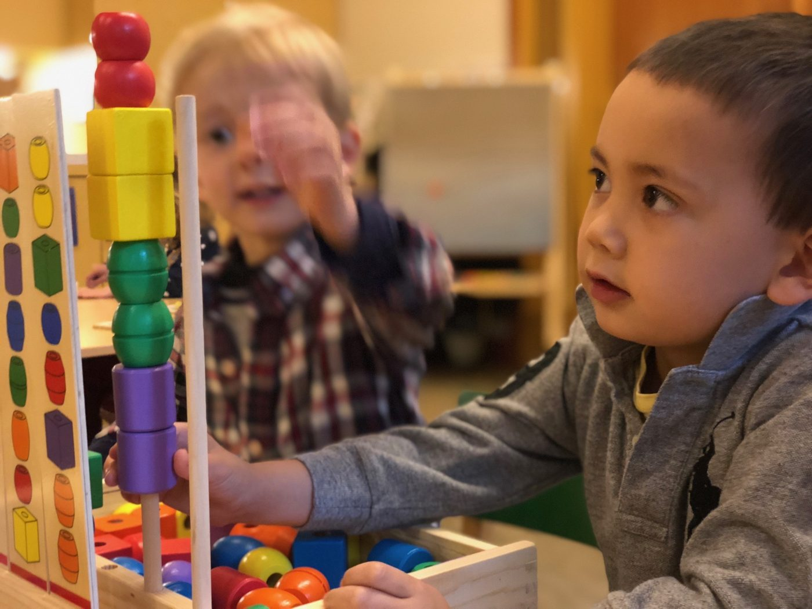
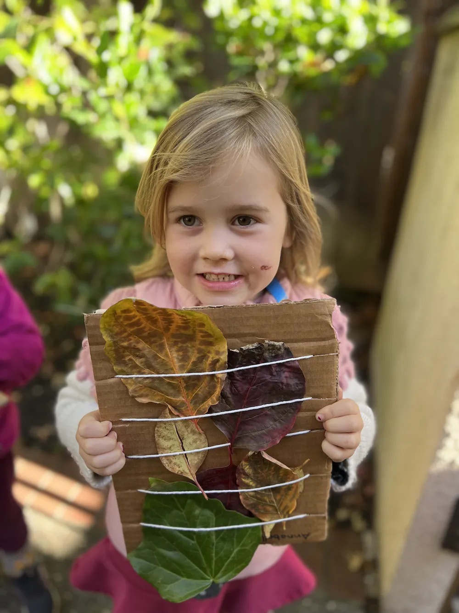

Our Program
A Thoughtful Program Designed for Every Preschooler
The Ross Preschool is a progressive 501(c)3 non-profit filled with happy children engaged in playful learning. Our child-directed, play-based, and nature-oriented curriculum is designed to address the full developmental needs of every child - preparing them not just for kindergarten, but for life.
🎨 Process-Based Art
🌱 Nature Exploration
📚 Literacy Development
🔬 Science Discovery
🤝 Social-Emotional Learning
🎓 Kindergarten Readiness
🎭 Afterschool Enrichment
☀️ Summer Camp